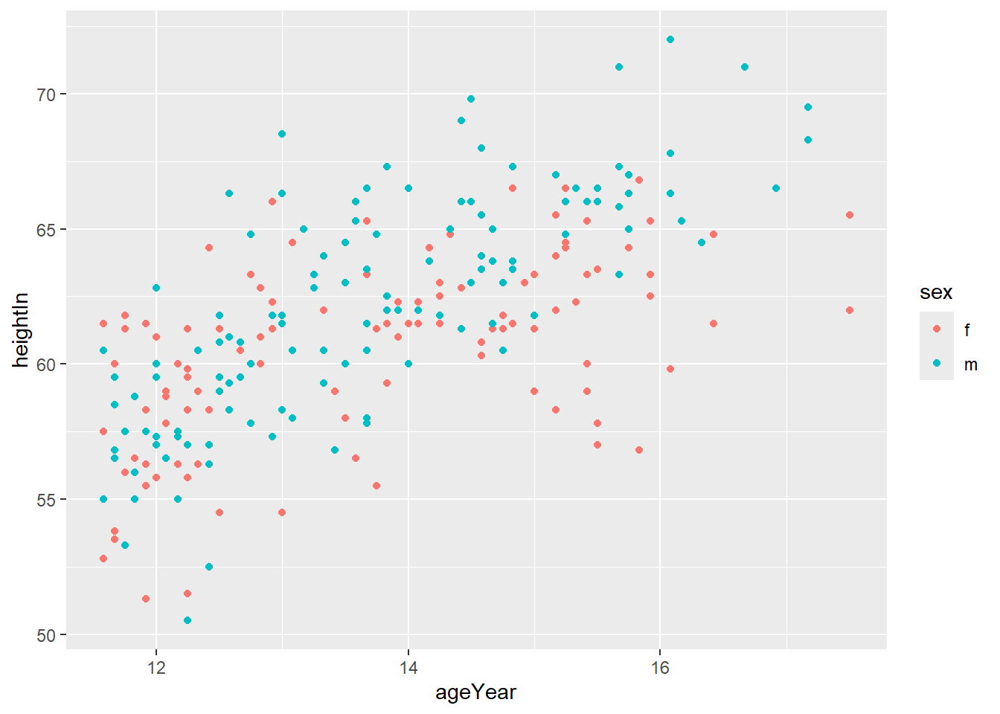

library(ggplot2)
library(tidyverse)
library(gcookbook)5 Scatter Plots
Today we are going through scatter plots drawing from Chapter 5 of Chang’s book. Here, I add a few comments for you to consider in addition to Chang’s comments.
Scatter plots are most useful if you have two variables in your dataset that are continuous. This is to say, they are both numeric data. A scatter plot positions one of the variables on the x axis of the graph and the other on the y axis. Each observation (unique row) is represented as a dot in the graph on the coordinates of their x and y axes.
Here, we use the heigthweight dataset from the package “gcookbook” that Chang provides. We plot the height of the respondents alongside their age. To do this, we follow the ggplot2 formula: use the ggplot() function, tell R which dataset we are using (in this case, the heightweight), setting a basic aesthetic, then telling R what type of plot to produce. For scatter plots, we use geom_point() - the dots I mentioned above.
ggplot(heightweight, aes(x = ageYear, y = heightIn)) +
geom_point()
If each point represents an individual, what are some conclusions that you can draw from this? Is there a relationship between age and height in this dataset?
There are ways we can enhance this visual to make the relationship clearer. One approach is to highlight the density contours of the data. The contours from stat_density2d() represent estimated regions of equal point density. Smaller and tighter contours—or darker filled regions when using geom = “polygon” with a fill aesthetic—generally indicate areas where data points are more densely clustered. This is similar to how contour lines on a topographic map represent changes in elevation.
ggplot(heightweight, aes(x = ageYear, y = heightIn)) +
geom_point() +
stat_density2d(geom = "polygon", alpha = 0.3)An alternate version of this is to use the fill.
ggplot(heightweight, aes(x = ageYear, y = heightIn)) +
geom_point() +
stat_density_2d_filled()We can enhance a scatter plot to better visualize the relationship between two variables by adding a regression line (or line of best fit). This line represents the best-fitting linear relationship that explains the variation between the variables. If there is a positive relationship, the line will slope upward, indicating that one variable tends to increase as the other does. Conversely, a negative relationship will result in a downward-sloping line—for example, if older individuals tended to be shorter.
ggplot(heightweight, aes(x = ageYear, y = heightIn)) +
geom_point() +
geom_smooth(method = "lm")What does this plot say about the relationship between height and age in this dataset? Note, the grey area surrounding the line? This is a confidence interval denoting that we can be 95% sure that the true line of best fit lies within those margins.
Finally, we can use some further characteristics about these individuals to filter the dataset and provide even more information. In this instance, we have the repsondent’s sex. Here, we use the ‘color’ option in the aesthetic argument to change the colour of the points to match the observation’s sex.
ggplot(heightweight, aes(x = ageYear, y = heightIn, colour = sex)) +
geom_point()
Alternatively, you can change the point shapes to reflect the same thing. This is an important thing to consider when visualising data. You want to enable all to interpret your data. Therefore, considering not everyone can see colours, it may be best to also change the shape. Here I use the ‘shape’ option to show one shape for male and another for female.
ggplot(heightweight, aes(x = ageYear, y = heightIn, shape = sex, colour = sex)) +
geom_point()
Now we can fit the same line of best fit as we did before but have a separate line for men and women.
ggplot(heightweight, aes(x = ageYear, y = heightIn, colour = sex)) +
geom_point() +
geom_smooth(method = "lm")What can you conclude from this plot about how the relationship between height and age differs for men and women?
If the points are distracting, you can just plot the line of best fit. I have also removed the confidence intervals using the se = False.
ggplot(heightweight, aes(x = ageYear, y = heightIn, colour = sex)) +
geom_smooth(method = "lm", se = FALSE)Alternatively, you can use the facet_grid() argument to split the plot into two plots based on the sex variable.
ggplot(heightweight, aes(x = ageYear, y = heightIn)) +
geom_point() +
geom_smooth(method = "lm") +
facet_grid(. ~ sex)Finally, you can create a scatter plot matrix to demosntrate the pairwise relationship of multiple variables in your dataset. Please note, I think the utility of these visualisations are limited. Their main usage is to you the data scientist to take a quick look at pairwise associations (two variables) in your dataset. I strongly advise you ti create simpler plots for clients (or stakeholders).
Scatter plot matrices present the paired associations between all of the variables in a dataset. Here, for simplification, I am going to create a subset of the heightweight dataset that Chang’s book provides us with.
I use the head() function to look at the top rows of the dataset. This reveals that we have age in months and years. I am going to remove one of these and use the pairs() function to create a a scatter plot matrix.
head(heightweight) sex ageYear ageMonth heightIn weightLb
1 f 11.92 143 56.3 85.0
2 f 12.92 155 62.3 105.0
3 f 12.75 153 63.3 108.0
4 f 13.42 161 59.0 92.0
5 f 15.92 191 62.5 112.5
6 f 14.25 171 62.5 112.0heightweight_clean <- heightweight %>%
select(- ageMonth)The select() function enables you to pull select a subset of variables in the dataset. Using the minus sign drops that variable - in this case, ageMonth.
Now we can plot our pairwise scatter plot matrix. These are a little funky when you first see them, so take some time to learn this.
pairs(heightweight_clean)Take a look at this matrix and you will see in the central diagonal cells the names of the variables that we have in our dataset. This diagonal acts as a sort of mirror for the visualisation. Since scatter plots are inherently pairwise visualisations, we interpret each “cell” in this matrix, each plot as a pairwise depiction of the variables on the diagonal.
For our purposes, let’s name the rows in this matrix 1-4 (top to bottom) and the columns A-D (left to right). In this plot cell 1A has the variable sex. Cell 1B Therefore has the scatter plot of ageyear (in cell B2) and sex (1A). Age is on the x axis while sex is on the y. Cell 2C, then, shows the scatter plot between age and height (the one we have been looking at so far). Finally, 3D shows the scatter plot of height and weight. Following this logic, then What is represented in cell 1C?
Sex is on the y axis and height in on the x axis. The left side of this matrix, “under” the diagonal, is just the reverse of what we have discussed with the axes flipped.
Is this starting to make sense? Spend some time now to familiarise yourself with this and describe with a partner the apparent association between each of the pairs (don’t worry about the sex variable).
5.1 Activity
From Winston Chang’s R Graphics Cookbook:
Select one or two and discuss their utility with a partner.
5.1.1 5.3
- Alternative point shapes
5.1.2 5.4
- You want to show even more in this plot. You Can plot another continuous variable to the colour or the size of the points.
5.1.3 5.5
- What to do if you have a scatter plot with many overlapping points? - Note, this recipe uses a different dataset (diamonds).
5.1.4 5.6
- You want to plot a regression line on a scatter plot but with a binary variable (0, 1).